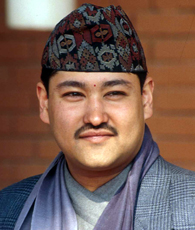

Dipendra Bikram Shah Dev
Biography:
Dipendra Bikram Shah Dev was born on 27 June, 1971 in Kathmandu, Nepal.
He was the son of Birendra Bikram Shah Dev and Aishwarya Rajya Laxmi Devi.
He was the eleventh King of Kingdom of Nepal from 1 June, 2001 to 4 June, 2001.
He died during the Royal massacred at the age of 29 on 4 June, 2001 in Narayanhiti Royal Palace, Nepal.